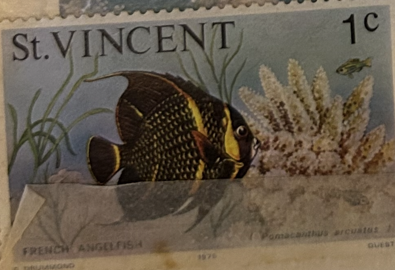
| SOURCE | TITLE| IMAGE MATCH | click to source page |
| www.ebay.com | ST. VINCENT 407 - French Angelfish "Pomacanthus arcuatus ... | 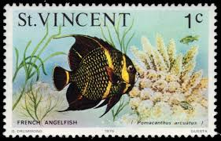 |
| www.ebay.com | ST VINCENT 1975 SG422 1c. FRENCH ANGELFISH - MNH | eBay | 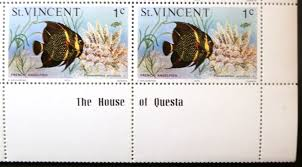 |
| us.thedybdahl.com | Black Fish – THE DYBDAHL CO. US | 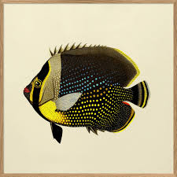 |
| www.finn.no | St. Vincent, 1977, Postfrisk | FINN-torget | 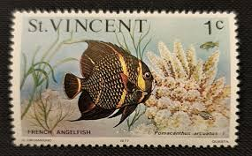 |
| nancy-tilles.pixels.com | Juvenile French Angelfish Greeting Card by Nancy Tilles | 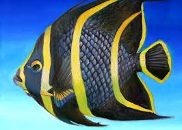 |
| www.wallsofthewild.com | Angelfish Wall Decal | Tropical Fish | Ocean Wall Decals ... | 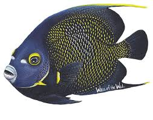 |
| aquaticcollection.com | French Angelfish WYSIWYG – Aquatic Collection Aquarium | 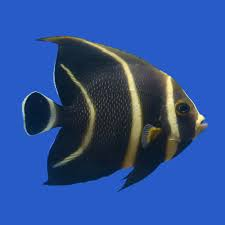 |
| www.pinterest.com | Saint Vincent and The Grenadines, Independence of St ... | 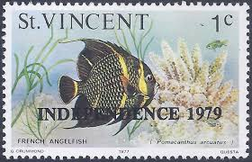 |
| worldwidecorals.com | French Angelfish - Adult - USA | 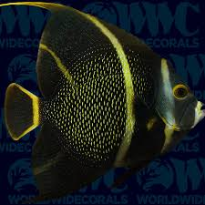 |
| www.amazon.com | Amazon.com: Hand Painted Tropical Fish Statue Replica 6 ... | 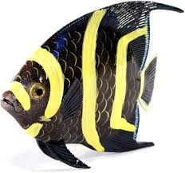 |
| www.liveaquaria.com | French Angelfish: Saltwater Aquarium Fish for Marine Aquariums | 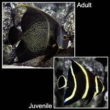 |
| www.sothebys.com | HOLOCANTHUS PASSER (KING ANGELFISH ... | 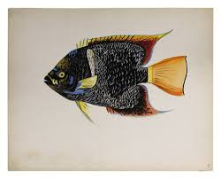 |
| www.instagram.com | Curaçao Sea Aquarium Park | Starting the week with our ... | 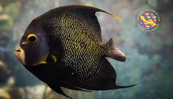 |
| www.joelsartore.com | French Angelfish (Pomacanthus paru) - Joel Sartore | 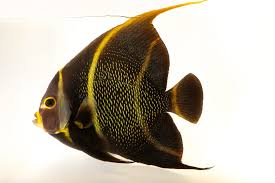 |
| www.newportcollection.com | Fishes Set Of 4 - Newport | 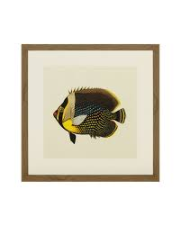 |
| www.youtube.com | All About The French Angelfish - YouTube | 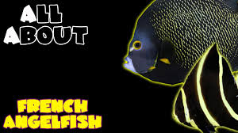 |
| saltwater.aqua-fish.net | Cortez Angelfish | 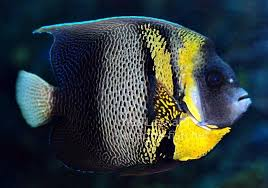 |
| www.facebook.com | Here's a Fun Fish Fact for your Friday! French Angelfish are ... | 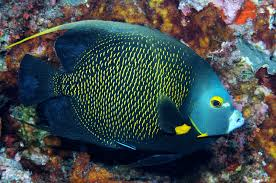 |
| www.etsy.com | Angels Under the Sea, Nursery Watercolor Print, Angelfish ... | 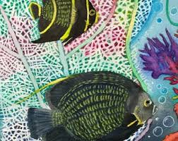 |
| nancy-tilles.pixels.com | Juvenile French Angelfish Zip Pouch by Nancy Tilles - Nancy ... | 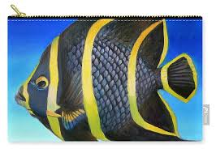 |
| worldwidecorals.com | French Angelfish - Adult - Caribbean | 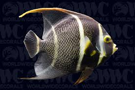 |
| www.ellieteramoto.com | French Angelfish closeup | Bonaire, Dutch Caribbean | Fish ... | 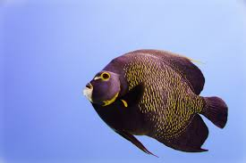 |
| www.ebay.com | BRITISH ST VINCENT STAMP OVERPRINT MINT HINGED LOT 1750AW | eBay | 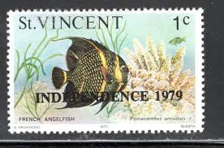 |
| fineartamerica.com | Juvenile French Angelfish Painting by Nancy Tilles - Fine ... | 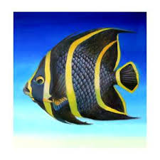 |
| en.wikipedia.org | Pomacanthus zonipectus - Wikipedia | 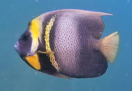 |
| www.floridamuseum.ufl.edu | French Angelfish – Discover Fishes | 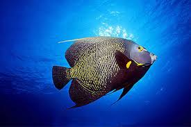 |
| www.vecteezy.com | Page 3 | Angel Fish Stock Photos, Images and Backgrounds for ... | 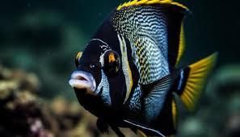 |
| reefsmartguides.com | French Angelfish - Reef Smart Guides | 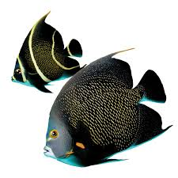 |
| www.fishi-pedia.com | French angelfish • Pomacanthus paru • Fish sheet | 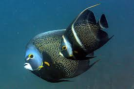 |
| www.saltwaterfish.com | French Angelfish - Angelfish Large - Saltwater Fish | 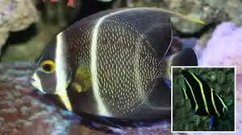 |
| www.georgiaaquarium.org | French Angelfish - Georgia Aquarium | 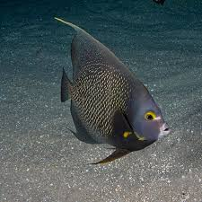 |
| www.etsy.com | 11x10 Atlantic & Pacific Angelfish Giclee Prints; Queen ... | 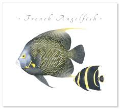 |
| www.kpaquatics.com | French Angelfish - KP Aquatics | 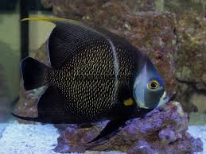 |
| harrysmarinelife.com | French Angelfish - Harry's Marine Life | 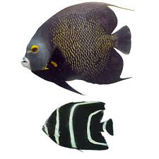 |
| www.fishlore.com | French Angelfish Care (Pomacanthus paru) | 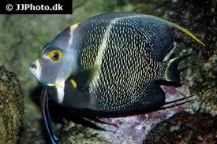 |
| www.thoughtco.com | French Angelfish Facts | 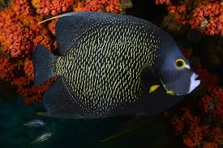 |
| www.christophercolumbuscondos.com | 14 Fish You May See While Snorkeling or Diving | Christopher ... | 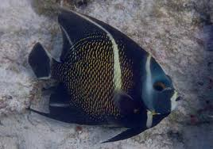 |
| www.istockphoto.com | 510+ French Angelfish Stock Photos, Pictures & Royalty-Free ... | 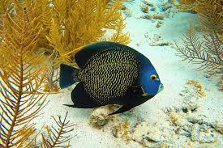 |
| drreefsquarantinedfish.com | French Angelfish (Adult) | Quarantined Fish | 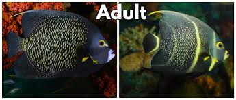 |
| www.mysaltwaterfishstore.com | French Angelfish (Medium 3-5 inches) – Foxy Saltwater Tropicals | 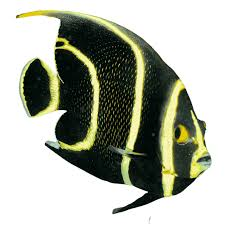 |
| www.shoreexcursioneer.com | Cozumel Sky Reef Beach Club Day Pass: Basic and All ... | 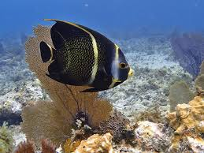 |
| biogeodb.stri.si.edu | Shorefishes of the Greater Caribbean online information ... | 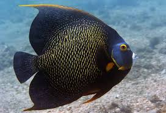 |
| www.liveaquaria.com | Maculosus Angelfish, Captive-Bred: Saltwater Aquarium Fish ... | 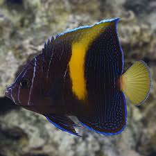 |
| dwazoo.com | French angelfish – The Dallas World Aquarium | 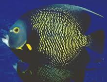 |
| www.aquaticcommunity.com | French Angelfish | 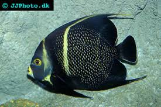 |
| www.instagram.com | Charlie Gruss is a proud Florida Keys local and a talented ... | 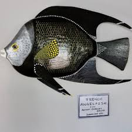 |
| www.aquariumdomain.com | French Angelfish (Pomacanthus paru) Species Profile ... | 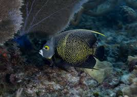 |
| www.inaturalist.org | French Angelfish (North Carolina Aquarium at Fort Fisher ... | 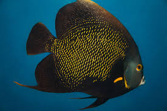 |
| divingaway.com | Swim and Dive with French angelfish - best destinations and ... | 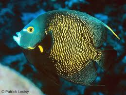 |
| www.violetaquarium.com | French Angelfish Size: ML 4" to 5" – Violet Aquarium | |
| www.vecteezy.com | Yellowish Black Fish Stock Photos, Images and Backgrounds ... | |
| angari.org | French Angelfish (Pomacanthus paru) - ANGARI Foundation | |
| harrysmarinelife.com | Cortez Angel - Harry's Marine Life | |
| www.sosuabeachdr.com | French Angelfish - Sosua Beach Dominican Republic | |
| aquaticcollection.com | Asfur Angelfish – Aquatic Collection Aquarium | |
| www.facebook.com | 🐠 French angelfish are born black with five yellow stripes ... | |
| issuu.com | FRENCH ANGELFISH of ARUBA and BONAIRE - Issuu | |
| floridakeysaquariumencounters.com | Marathon Aquarium: Manta Rays, Sharks, Coral Reefs ... | |
| caribbeancompass.com | More Than Skin Deep: Color and Pattern in Marine Fishes ... |